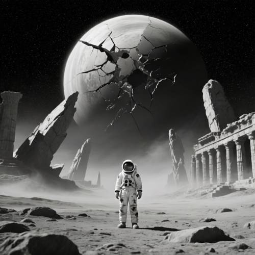
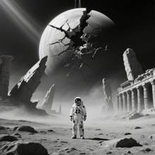
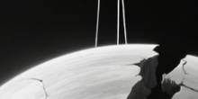
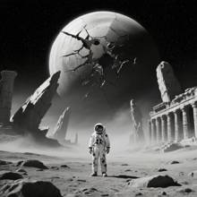
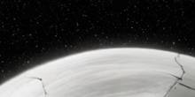
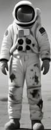

Style — Please generate a documentary black and white photo of a tiny astronau
Please generate a documentary black and white photo of a tiny astronaut standing next to the ancient ruins of a giant planet.


Judge — Direct
- PASSStyle — The image is presented in black and white, utilizing a full grayscale palette. The rendering of the scene, including the textures of the ground and ruins, the details of the astronaut's suit, and the lighting and shadows, gives it a realistic, photographic appearance, aligning with the 'documentary black and white photo' style.
- FAILAttribute - Size — The image features a very large, striped planet in the sky, which visually represents a 'giant planet'. However, the astronaut in the foreground does not appear 'tiny'. Relative to the nearby ancient ruins, the astronaut has a scale comparable to a person standing next to large columns, rather than being depicted as diminutive to emphasize vastness.
Judge — Continuum
- PASSStyle — The image is rendered in monochrome, utilizing shades of black, white, and grey. It presents a scene with high detail and realistic lighting and textures, which gives it the quality of a photograph, thus aligning with the 'documentary black and white photo' style.
- PASSAttribute - Size — The image features an astronaut standing in the foreground. In comparison to the vast landscape and the large, towering ancient ruins in the background, the astronaut appears small, fulfilling the 'tiny astronaut' requirement. In the sky, a massive, cracked planet dominates the upper portion of the frame, visually representing a 'giant planet'. The relative scales in the image are consistent with the prompt's description.
What the agent did
Thinking
The user is asking for a documentary-style black-and-white photograph of a small astronaut standing beside the ancient ruins of a giant planet. Let me break down the prompt: - Documentary-style black-and-white photograph - Small astronaut (i.e., the astronaut appears tiny compared to the ruins — a sense of scale) - Ancient ruins of a giant planet — this is a somewhat surreal concept: the "ruins of a giant planet." So the planet is broken/decayed, like a shattered giant planet that has become ruins — crumbling colossal planetary structures, debris, craters, shattered continental pieces. Let's generate this with qwen-image. I should fill in visual details: high-altitude vantage point, weathered astronaut suit, desolate landscape, cracked planetary crust, giant broken fragments of the planet's surface, monoliths/ruins, film grain, high contrast. Let's write a strong prompt: "Documentary-style black-and-white photograph, gritty film grain, small astronaut in a weathered white space suit standing on a desolate rocky plain, dwarfed by the colossal ancient ruins of a giant shattered planet — enormous cracked planetary fragments and broken crustal slabs looming in the background, jagged mountainous chunks of broken planet surface, a deep dark sky beyond the atmosphere's edge, dramatic high-contrast lighting, vast sense of scale, cinematic wide angle, photorealistic, monochrome, 35mm documentary photography" Wait — "ancient ruins of a giant planet" — it could also be interpreted as ruins that existed on a giant planet. But given the phrase "a small astronaut standing beside the ancient ruins of a giant planet," the most visually striking interpretation is a broken, collapsed giant planet with its ruins/fragments. I'll go with the shattered planet fragment interpretation — colossal broken pieces of the planet, like a dead giant that has crumbled into a ruinous landscape. I'll generate with model qwen-image, width 1024, height 1024 (or maybe a widescreen 1344x768 for a documentary feel? The instructions say not to change the size — "the image size is fixed for comparison purposes" — the default is 1024x1024. I'll leave it at the default. Actually, a landscape composition might suit a documentary photo, but since the size is fixed for comparison, I'll use the default 1024x1024.) I'll omit steps and guidance. I'll mark the best result as I go. Plan: 1. generate_image with qwen-image 2. Inspect the results (overall view + zoom on the astronaut) 3. Edit if necessary 4. mark_best Alright, let's get started.
Step 1 — `generate_image`
{
"prompt": "Documentary black and white photograph, 35mm film grain, gritty monochrome. A tiny astronaut in a worn, scuffed white spacesuit stands alone on a desolate rocky plain, dwarfed by the colossal ancient ruins of a shattered giant planet. Enormous cracked fragments of the giant planet's broken crust rise in the background like the bones of a dead world \u2014 titanic jagged slabs, broken continents, a huge split hemispherical shell hanging in the dark sky. Deep shadows, dramatic high-contrast light raking across the terrain, atmospheric dust haze, vast overwhelming sense of scale, photorealistic, cinematic wide-angle documentary composition, monochrome, no color.",
"model": "qwen-image"
}Result img_0

Thinking
The image is pretty good. A black-and-white documentary-style photo of a small astronaut in front of the shattered giant planet (a cracked sphere hanging in the sky), with ancient ruins (a columned temple, monoliths). Let me critique it: 1. There are weird thin lines/strings at the top of the planet — like a fishing line, or some kind of wire connecting the top of the planet to the top edge of the frame. This is an artifact and looks unnatural. 2. The astronaut is small but reasonably well visible. The sense of scale is good. 3. The ruins: there's a Greek-style temple with columns on the right — good as "ancient ruins." 4. The black-and-white documentary look is solid with its film grain. The main flaw: the thin vertical lines at the top of the planet that look like strings. Let me inspect that region and then try to fix it with an edit. Also, let me inspect the astronaut to check for any artifacts. First, let me mark this as the best (since it's a fairly good image), then inspect and fix the string artifact.
Model
This is a strong first result — a cracked giant planet looming over a ruined landscape, with a tiny astronaut in the foreground. One obvious artifact: there's a thin wire/line running from the top of the planet to the edge of the frame. Let me check the details before fixing it.
Step 2 — `mark_best`
{
"image": "img_0",
"reason": "Strong composition matching the prompt: tiny astronaut, shattered giant planet, ancient ruins, B&W documentary feel. Flaw: thin string artifact at top of planet."
}Step 3 — `inspect_region`
{
"image": "img_0",
"roi": [
380,
0,
620,
120
]
}Result img_1

Thinking
Confirmed: two thin bright lines (like strings/antennas) extend from the top of the planet to the top edge of the frame. These need to be removed. I'll use edit_image with a targeted instruction: "Remove the two thin bright lines/strings extending upward from the top of the planet, and fill with dark, empty sky." Should I also check the astronaut while I'm at it? The astronaut looks fine in the overall view — a small figure, a suit with dirt marks on it. Let's focus on fixing the strings first.
Model
I've confirmed that two thin wire-like lines are extending from the top of the planet. I'll remove them with targeted edits.
Step 4 — `edit_image`
{
"image": "img_0",
"prompt": "Remove the two thin bright vertical lines (strings/wires) extending up from the top edge of the cracked planet into the sky. Fill that area with the same dark, empty, grainy night sky as the surrounding background. Keep everything else exactly the same.",
"model": "qwen-image"
}Result img_2

Thinking
The string has been removed. The planet is now clean. Let me verify the top region to check whether there are any remaining lines, and inspect the astronaut in detail.
Model
The wires are gone. Let me verify the top of the planet is clean and check the astronaut up close.
Step 5 — `inspect_region`
{
"image": "img_2",
"roi": [
380,
0,
620,
120
]
}Result img_3

Step 6 — `inspect_region`
{
"image": "img_2",
"roi": "the astronaut"
}Result img_4

Thinking
Top of the planet: clean, no strings, stars visible in the sky. Good. Astronaut: mostly fine — a weathered, scuffed suit (documentary vibe), helmet with a dark visor, chest control panel with buttons, gloves. Hands look a bit stubby, but at the scale of a full image it's small so no issue. Suit has dirt marks, which matches "documentary / worn" perfectly. No fatal artifacts. One thing: the astronaut's face / visor — dark, no face visible, which is realistic as a spacesuit. The chest panel looks slightly odd (round buttons), but it reads as a control panel. Acceptable. Image matches all elements of the prompt: - Documentary black-and-white photo ✓ (grain, high contrast, monochrome) - Small astronaut ✓ (dwarfed by the environment) - Ancient ruins ✓ (Greek-style colonnade, monoliths, broken columns) - Giant planet ✓ (a cracked, massive shattered sphere dominating the sky) This is good enough to stop here. Mark img_2 as the best and finish.
Model
Both checks passed — the top of the planet is now clean, starry sky only, no string artifacts. And the astronaut reads clearly as a small, weathered figure in a worn, scuffed suit, which fits the documentary tone perfectly. Everything the prompt asked for is in place: - **Documentary black-and-white photo** — grainy monochrome, high-contrast raking light - **Small astronaut** — a lone, worn figure dwarfed by the landscape - **Ancient ruins** — collapsed colonnades, broken monoliths, and stone pillars - **Giant planet** — a huge cracked, shattered world looming overhead
Step 7 — `mark_best`
{
"image": "img_2",
"reason": "Final version: string artifact removed from top of planet, verified clean on zoom; astronaut and ruins intact. Fully matches the prompt."
}Thinking
Done. The final image img_2 has already been marked as the best. I'll wrap it up concisely.
Model
Done. The final image (img_2, marked as best) is a gritty black-and-white documentary photo: a tiny, scuffed astronaut standing on a dusty plain, dwarfed by a colossal cracked and shattered planet looming in a star-filled sky, with ancient colonnade ruins and broken monoliths on either side. The only fix needed was removing two thin wire-like lines from the top of the planet, which I verified was clean on zoom before finalizing.